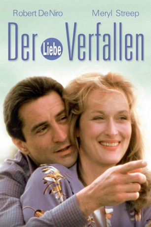
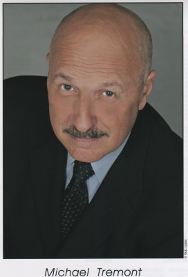

#10649 Der Liebe verfallen
Alternativ: Falling in Love (Englischer Titel)
 
 IMDB-Wertung: 6.5 / 10
IMDB-Wertung: 6.5 / 10  Metascore: 0
Metascore: 0 
Buchillustratorin Molly Gilmore fährt fast täglich von Ardsley nach Manhattan, um den kranken Vater zu besuchen. In Dobbs Ferry steigt Bauingenieur Frank Raftis zu. Beim Weihnachtseinkauf für ihre Familien treffen sie in einer Buchhandlung aufeinander, vertauschen versehentlich die Geschenke. Als sie sich wiedersehen, folgt der Verabredung zum Lunch die Suche nach einem Liebesnest. Das erste Mal schlägt fehl, weil Molly ihren Mann nicht betrügen kann. Erst nach etlichen Konflikten und Trennungen werden sie frei füreinander.
Jahr: 1984
Dauer: 99 Minuten
FSK: 12
Land: USA Studio: Paramount PicturesTonspuren:
Untertitel:
Auflösung: 1080p (1920x1080) Größe: 7127 MB
Genre: Drama, Liebe
Regisseur: Ulu Grosbard
Drehbuch: Michael Cristofer
Soundtrack: Dave Grusin
Darsteller:
 Robert De Niro als Frank Raftis
Robert De Niro als Frank Raftis Meryl Streep als Molly Gilmore
Meryl Streep als Molly Gilmore Harvey Keitel als Ed Lasky
Harvey Keitel als Ed Lasky Jane Kaczmarek als Ann Raftis
Jane Kaczmarek als Ann Raftis George Martin als John Trainer
George Martin als John Trainer- David Clennon als Brian Gilmore
 Dianne Wiest als Isabelle
Dianne Wiest als Isabelle Victor Argo als Victor Rawlins
Victor Argo als Victor Rawlins Jesse Bradford als Joe Raftis
Jesse Bradford als Joe Raftis Frances Conroy als Waitress
Frances Conroy als Waitress Paul Herman als Engineer
Paul Herman als Engineer Kenneth Welsh als Doctor
Kenneth Welsh als Doctor- Sandra Bogan als Marta (uncredited)
-  Mike Tremont als Architect (uncredited)
- Wiley Earl als Mike Raftis
- Chevi Colton als Elevator Woman
- Richard Giza als Salesman
- James Ryan als Cashier
- Sonny Abagnale als Tow Truck Driver
- George Barry als Conductor #1
- L.P. McGlynn als Conductor #2
- J.S. Klinetob als Conductor #3
- John H. Reese als Taxi Driver #1
- Clem Caserta als Taxi Driver #2
- Yanni Sfinias als Hot Dog Vendor
- Donald R. Goodness als Minister
- Florence Anglin als Saleslady
- Gerald M. Kline als First Man
- Barry R. Smith als Usher
- John Ottavino als Construction Worker
- Lisa Bansavage als Nurse (uncredited)
- Zenobia Conkerite als Extra (uncredited)
- Llewellyn Lafford als Metro North Commuter (uncredited)
- Ron Turek als Shopper (uncredited)
Datei: X:\1984\Liebe verfallen, Der (1984, FSK12, 1920x1080).mkv seit 08.02.2019
Festplatte: HD 1980-1986
 Es gibt insgesamt 46 Filme in der Gruppe '1984'
Es gibt insgesamt 46 Filme in der Gruppe '1984'